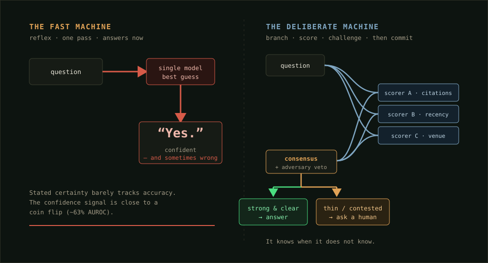
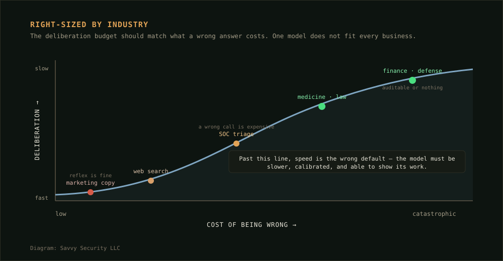

Savvy Security LLC · Security Architecture
The Deliberate Machine
Slower, on purpose — the case for AI that is built to be right instead of fast, and sized to the industry it has to serve. With a small working engine, and the source released free.
What this is, and why I built it
There is a race on to make AI models bigger and faster, and the companies with the most compute are going to win it. I am not in that race. I run a one-person security shop on the Nature Coast of Florida, and the problems my customers have are not “answer me in half a second.” They are “do not be confidently wrong about the thing that gets someone breached, sued, or hurt.”
So I built the opposite of the race. A small reasoning engine that is deliberately slow: it reads the evidence, scores it the way the research community actually weighs it, argues against its own answer, and — this is the part that matters — stops and asks a human when the evidence is thin or the experts disagree. The whole thing is a few hundred lines of plain Python. It is free, at the bottom of this page, with a license that lets you do whatever you want with it.
This article is the idea behind it: that speed is a choice, that for a lot of industries it is the wrong default, and that the right model for a job is the one whose caution matches what a wrong answer costs.
Part I — The One Flaw That Matters
Start with the failure mode, because it is the whole reason to build anything differently. The problem with today’s language models is not that they are sometimes wrong. Everything is sometimes wrong. The problem is that their confidence tells you almost nothing about whether they are right.
That is a measurable claim, not a vibe. Researchers who survey how well a model’s stated certainty lines up with its actual accuracy keep finding the same thing: models come out of early training reasonably well calibrated, and then the final polishing stage — the reinforcement-learning-from-human-feedback step that makes them pleasant to talk to — teaches them to sound sure. Because a confident-sounding answer gets rated higher by human reviewers, the model learns that certainty is rewarded whether or not it is earned.
When you ask one of these models to just tell you how confident it is, it is worse than you would hope. Audited across models and tasks, those self-reported confidence scores separate right answers from wrong ones only a little better than a coin flip.
The sharpest number I know comes from Stanford’s law school. When researchers there profiled how often leading models fabricate when asked specific legal questions, they measured hallucination rates between 69% and 88% — and the models were systematically overconfident in the answers they made up.
Now hold that next to how these tools are being deployed in my field. The 2026 SANS survey of security professionals found adoption running well ahead of reliability — a clear majority report significant shortcomings when AI detects or responds to threats — and practitioners ranked human-centered controls above AI-specific tooling for stopping AI-enabled attacks. A separate survey put it at roughly three-quarters of security teams wanting AI kept under human oversight. When researchers compared models against human experts on cybersecurity risk scenarios, the models consistently underestimated the risk.
The people closest to the work have already reached the verdict: these tools are useful and they are not trustworthy enough to turn loose. That is not a limitation to engineer around later. For a security product, it is the design spec.
Part II — Slower Is Not a Bug
Here is the part the race gets backwards. The most important finding in AI over the last two years is that letting a model think longer before it answers reliably makes it more accurate — and that this improvement follows its own curve, separate from the one you get by making the model bigger.
The researchers call it test-time compute, and one widely-cited result from that line carries a title that is practically a manifesto for small shops like mine: scaling the compute a model spends at the moment of answering can be more effective than scaling the model’s size. In plain terms, a modest model that deliberates can beat a giant model that answers on reflex.
The way you spend that extra thinking time, in practice, is to stop taking the first answer. You generate several candidate lines of reasoning, score them, and keep exploring the ones that look strongest — the same branch-and-evaluate method behind the engines that mastered Go. Studies of this “search over reasoning steps” show it measurably improves correctness. And the researchers are refreshingly honest about the cost: the biggest drawback of tree search for reasoning is that it is slower than answering in one shot.
That is the trade, stated plainly from both sides. You spend time to buy accuracy. For a chatbot that writes marketing copy, that trade is a bad one — nobody is harmed by a fast first draft. For a system triaging a security alert at three in the morning, it is the only trade that makes sense.

Part III — I Built a Small One to Prove the Point
Theory is cheap. So I wrote a working version — small enough to read in one sitting, concrete enough to run. It answers a narrow kind of question: given the scholarly literature on a topic, what does the evidence actually support, and how sure should we be? It is not a chatbot and it does not write prose. It weighs evidence and reports a verdict, a confidence number, and the full reasoning behind both. Here is what it does, piece by piece.
The corpus is data, never code
The engine reads scholarly records — each one a claim a paper makes about a question, tagged with how it was published and how much the field has built on it. It is parsed as data and nothing more. Nothing in a record is ever executed. This is the first security decision, and it is deliberate: if an attacker ever manages to slip a poisoned document into the corpus, the worst they can do is get it weighed, not run. The published research on this threat — the PoisonedRAG work — shows that as few as five crafted documents in a database of millions can flip a retrieval system’s answer about 90% of the time, and that standard defenses do not fully stop it. A system that treats corpus text as data instead of instructions is the floor you build on.
Three scorers, decorrelated on purpose
The question gets answered three times, by three scorers that reach a verdict differently — one leans on how much the field cites a work, one on how recent it is, one on where it was published. When all three agree, the consensus is robust. When they split, that split is itself the signal: the evidence is shaky, and the engine treats it that way.
The reason there are three, and why they are built to disagree, comes straight out of the ensemble literature — and so does the honest caveat. Independent, decorrelated models give you a real uncertainty signal. But you cannot fake that diversity by forcing it: controlled studies show that pushing models apart with a diversity knob can actually hurt accuracy. So the scorers here differ by construction, in what evidence they emphasize, not by a regularizer bolted on to make them disagree. That is the whole weighting policy, and it is small enough to print:
# policy.py — the frozen "inherited core" SCORERS = [ ScorerProfile("citation-weighted", w_citation=0.60, w_venue=0.25, w_recency=0.15), ScorerProfile("recency-weighted", w_citation=0.20, w_venue=0.25, w_recency=0.55), ScorerProfile("venue-weighted", w_citation=0.25, w_venue=0.55, w_recency=0.20), ] # thresholds that govern autonomy — the one real dial of the system CONFIDENCE_AUTONOMOUS = 0.70 # below this -> escalate to a human MIN_INDEPENDENT_GROUPS = 2 # fewer independent voices -> flag as thin ENSEMBLE_AGREEMENT_MIN = 0.67 # scorers must mostly agree, else flag
The core policy ships frozen. It does not rewrite itself from whatever it reads today. Improving it means producing a new, reviewed version — not letting live input edit the model while it runs. Retraining is a deliberate new generation, not a mutation in the field.
Weighted by how the community actually reflects the work
“Most accurate data reflected by the community” is a nice phrase; the engine has to make it concrete. Each source’s weight is how it was vetted (peer-reviewed counts more than a preprint, which counts more than an unknown blog), times where it ran, times how much the field has built on it, times how current it is — with corroboration counted across independent research groups, so five papers from one lab do not masquerade as five independent voices. It is transparent arithmetic you can audit, not a black box.
An adversary whose only job is to attack the answer
This is the piece I care about most. A separate component — deliberately not one of the scorers — takes the comfortable consensus and tries to break it. Is there a well-weighted minority that disagrees? Does the majority rest on too few independent groups? Is it leaning on weak sources? Have the most recent strong papers started to dissent? Any of those raises a flag, and a flag pushes the decision toward a human. A model grading its own homework rubber-stamps itself; the critic has to be independent, or it is theater.
It knows when it doesn’t know
Put it together and run it on real literature — calibration, test-time compute, ensembles — and the behavior is exactly what you want. Two questions with a genuine community consensus come back answered and handled on their own. The one question that is actually contested in the literature gets escalated, with the dissent named:
$ python3 run_demo.py Q: Is miscalibrated overconfidence a primary reliability risk in deployed LLMs? VERDICT SUPPORTED confidence 0.76 ROUTING AUTONOMOUS (handled autonomously) scorers citation +0.78 | recency +0.75 | venue +0.76 agreement 100% Adversary: no flags — consensus survived the challenge. Q: Does allocating more compute at inference time improve LLM correctness? VERDICT SUPPORTED confidence 0.81 ROUTING AUTONOMOUS (handled autonomously) Adversary: no flags — consensus survived the challenge. Q: Does forcing predictive diversity improve deep-ensemble reliability? VERDICT CONTESTED confidence 0.00 ROUTING REVIEW_REQUIRED >>> HUMAN REVIEW reason evidence is genuinely contested; adversary raised a high-severity flag adversary [HIGH] CONTESTED: dissenting evidence holds 63% of weighted support [HIGH] THIN_EVIDENCE: majority rests on 1 independent group; need >= 2 strongest dissent -> Abe et al. (2023): forcing diversity hurts high-capacity deep ensembles; more accurate, less diverse members win
The real output. Notice the third result: the engine does not pick a side on a question the field itself has not settled. It flags it, shows the strongest opposing finding, and hands it to a person. That refusal to guess is the product.
Every one of those decisions also writes its full basis — the policy version, the matrix, the scores, the adversary’s flags — to an append-only log. Nothing about a verdict is hidden inside an opaque pass. That audit trail is not a feature I added for compliance; it is the natural output of a machine that reasons in the open. And it happens to be exactly what the law is starting to require: the foundational Harvard work on AI accountability argues that systems making consequential decisions should be able to explain them, and a widely-cited result spells out that black-box access alone is not enough to audit a system rigorously. A reasoner that logs its own argument is built from the audit outward.
Part IV — A Model Built for the Job It Has to Do
Here is the idea I most want to leave you with, because it is where this stops being a toy and starts being a business.
The whole industry ships one shape of model and expects every customer to adapt to it. That is backwards. The right amount of deliberation is not a universal constant — it is a function of what a wrong answer costs in your industry. A model should be built for the job it has to do, and “how slow and careful should it be” should be answered differently for a marketing team than for a trauma ward.

This reframes the “slower but more accurate” pitch. It is not that slow is always better — it plainly is not. It is that the deliberation has to be matched to the domain, and almost nobody is selling that match. A few consequences fall out of taking it seriously:
- The corpus is domain-specific, and so is the trust gate. A medical reasoner weights clinical trials and guideline bodies; a security reasoner weights CVEs, vendor advisories, and incident reports. What counts as an authoritative source — the thing the whole weighting rests on — is a property of the industry, not a global setting.
- The escalation threshold is a business decision, not a technical one. That confidence floor in the code, the line where the machine stops and asks a human, is where your risk tolerance lives. A clinic sets it high and escalates often. A spam filter sets it low and rarely bothers anyone. Same engine, different dial, and the dial belongs to the customer.
- “Expensive and slow” stops being a weakness and becomes the moat. The giant general-purpose labs are optimized for billions of cheap, fast queries. A deliberately slow, deliberately auditable, domain-tuned reasoner is anti-strategic for them to chase — which is exactly why it is a defensible place for a specialist to stand. The property that keeps you out of the chatbot market is the property that protects your market from the chatbot companies.
This is not a thought experiment for me. It is the thing Savvy Security is built to do: take the slow, careful, auditable architecture and point it at the one industry where being confidently wrong is most expensive — mine. The engine in this article is the smallest honest demonstration of the pattern. The real version is domain corpora, a hardened trust gate, and a human-on-the-loop that the security community already told us, in survey after survey, they want.
Part V — The Honest Ledger
I would rather hand you the limitations than have you find them. Here is what the research actually supports, and what is still an open bet I am making rather than a settled result.
| Claim | Standing | What the record supports |
|---|---|---|
| Confident wrongness is the core risk | Established | Calibration surveys and Stanford’s legal study document the overconfidence directly. |
| Deliberation improves correctness | Established | Test-time-compute scaling is a robust, replicated finding across labs. |
| Search-guided reasoning helps, but is slower | Established | The gains and the speed cost are reported in the same body of work. |
| Scorer disagreement is usable uncertainty | Qualified | True for independently built scorers; forcing diversity can backfire. |
| Corpus poisoning is a real, open threat | Established | PoisonedRAG demonstrates it; existing defenses are shown insufficient. |
| Matching deliberation to the industry | My bet | The components are proven; selling them as a domain-fit product is the wager. |
And the thing it cannot do, which I will say plainly: it does not remove the human. A system that gets more trustworthy the more its internal critic fights the easy answer is still a system that needs a person at the escalations. The whole security literature lands on the same conclusion, and so do I — the win here is not an unattended machine. It is a machine that handles the clear cases on its own, flags the hard ones honestly, and never pretends to a certainty it did not earn. You move the human from checking everything to judging the exceptions. That is a real reduction in burden. It is not a cliff you get to walk off.
Every piece of this is a zero-trust pattern pointed inward. The corpus is untrusted data, never code. The core model is frozen at deploy, not rewritten by live input. The answer has to survive an independent adversary before it ships. The uncertain cases escalate instead of guessing. None of that is novel security thinking — it is the posture we already apply to every other untrusted boundary. The only new idea is applying it to the model’s own reasoning.
The Code Is Yours
Free · MIT licensed
The entire engine from Part III is released free, under the MIT license — use it, fork it, sell what you build with it, no permission needed. It is plain Python 3, standard library only, no dependencies to install. Clone or read it, then run python3 run_demo.py.
deliberate/policy.py · corpus.py · scoring.py · adversary.py · engine.py · audit.py
corpus/scholarly_corpus.json · run_demo.py · README.md · LICENSE
One honest note on the sample data: the citation counts in the included corpus are illustrative placeholders, there to demonstrate the weighting, not verified figures. Swap in real metadata — from a source like OpenAlex or Semantic Scholar, with the trust gate on ingest — before you draw any conclusion from a verdict. That swap is the first real extension, and the README walks through it.
The Through-Line
The industry is building machines to be fast and agreeable because fast and agreeable is what gets rated highly and shipped widely. For most of what people use AI for, that is fine. But there is a whole set of industries — mine among them — where the thing you actually need is a machine that will look you in the eye and say “I don’t know, ask a person,” and mean it. That machine is slower. It costs more per answer. And for the job it is built to do, it is the only one worth trusting.
Sources
Calibration & overconfidence
- Geng, Jiahui, et al. “A Survey of Confidence Estimation and Calibration in Large Language Models.” NAACL 2024. arXiv:2311.08298.
- Abbasli, Toghrul, et al. “Comparing Uncertainty Measurement and Mitigation Methods for LLMs: A Systematic Review.” 2025. arXiv:2504.18346.
- Dahl, Matthew, Varun Magesh, Mirac Suzgun and Daniel E. Ho. “Large Legal Fictions: Profiling Legal Hallucinations in Large Language Models.” Journal of Legal Analysis / Stanford, 2024. arXiv:2401.01301. Hallucination 69–88% with systematic overconfidence.
Deliberation & search-guided reasoning
- Snell, Charlie, Jaehoon Lee, Kelvin Xu and Aviral Kumar. “Scaling LLM Test-Time Compute Optimally can be More Effective than Scaling Model Parameters.” 2024. arXiv:2408.03314.
- Xie, Yuxi, et al. “Monte Carlo Tree Search Boosts Reasoning via Iterative Preference Learning.” NeurIPS 2024 Workshops. arXiv:2405.00451.
- Gao, Zitian, et al. “Interpretable Contrastive Monte Carlo Tree Search Reasoning.” 2024 — documents tree search’s slower speed as its key drawback. arXiv:2410.01707.
Ensembles & the diversity caveat
- Fort, Stanislav, Huiyi Hu and Balaji Lakshminarayanan. “Deep Ensembles: A Loss Landscape Perspective.” 2019. arXiv:1912.02757.
- Abe, Taiga, E. Kelly Buchanan, Geoff Pleiss and John P. Cunningham. “Pathologies of Predictive Diversity in Deep Ensembles.” 2023. arXiv:2302.00704.
Retrieval security
- Zou, Wei, Runpeng Geng, Binghui Wang and Jinyuan Jia. “PoisonedRAG: Knowledge Corruption Attacks to Retrieval-Augmented Generation of Large Language Models.” USENIX Security 2025. arXiv:2402.07867.
Human oversight in security, and governance
- SANS Institute. 2026 SANS AI Survey — adoption outpacing reliability; human-centered controls ranked above AI-specific tooling. (Summary: Kiteworks.)
- Pinto, Gustavo Roberto, Arthur do Prado Labaki and Rodrigo Sanches Miani. “Evaluating the Reliability of Multiple Large Language Models in Risk Assessment: A CIS Controls-Based Approach.” 2026. arXiv:2605.05424.
- Doshi-Velez, Finale, Mason Kortz, et al. “Accountability of AI Under the Law: The Role of Explanation.” Berkman Klein Center, Harvard, 2017. arXiv:1711.01134.
- Casper, Stephen, et al. “Black-Box Access is Insufficient for Rigorous AI Audits.” ACM FAccT 2024. arXiv:2401.14446.
A note on method. The engine described here is a demonstration I built to make the argument concrete, not a product release. Every factual claim about the research is cited to its primary source above, and where the literature is genuinely split — the ensemble-diversity question — I let the engine itself surface the disagreement rather than resolve it. The citation counts in the sample corpus are illustrative. The architecture argument, including the industry-fit framing in Part IV, is my own position and is labeled as such in the ledger.
Malcolm R. Smith writes on security architecture, threat modeling, and autonomous defense for Savvy Security LLC. He builds software as a prompt engineer on a used Chromebook, and argues, at length, that this is an advantage.